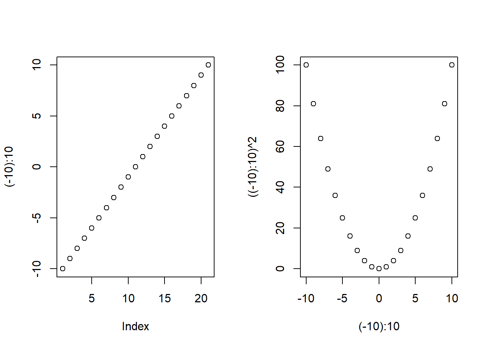

19 函数进阶
19.1 函数调用的各种形式
在R语言中，有两条简明的理解R程序的原则：
- 任何成分都是R的对象（变量、函数等等）；
- 任何活动都是调用函数（求子集、四则运算、比较、函数调用等）。
函数调用有四种方式：
一、前缀形式。
这也是一般的格式，如fsub(5, 2)。
二、中缀形式。
二元运算符实际上都是函数，5 - 2的写法是中缀形式，
等同于`-`(5, 2)。因为-不是合法的R变量名（函数名），
所以在写成前缀形式时要用反向单撇号`保护。
这样，在lapply等泛函中可以使用`+`这样的四则运算作为输入的操作。
如
## [1] 3## [1] 3为了给1:5每个元素减去2，可以写成
## [1] -1 0 1 2 3用户也可以自己定义函数名如%x%这样的中缀函数，
可以用中缀格式调用。
如：
## [1] "xyz123"三、替换形式。 对属性的修改经常这样写， 如
## a b
## 1 2看起来是在对一个函数的输出结果赋值， 这很不合理， 但实际相当于前缀形式的
即制作了x的副本，调用names<-函数，
将x重新绑定到names<-函数的返回值。
四、特殊形式。
x[1], x[[1]]这些取子集或元素以及修改，
(), {}，if结构、for循环等本质上也是函数调用，
只不过用了特殊的语法。
这些函数在R中都是初等函数(primitive functions)。
初等函数仅在基本R中定义，
是由C代码实现的，
用户无法访问其三个部分。
取子集的特殊函数例如：
## [1] 1## [1] 1## [1] 999 2 3 4 5## [1] 999 2 3 4 5注意上面的x[1] <- 999的替代写法中，
调用`[<-`(x, 1, 999)是将其返回值（一个向量对象）重新绑定给变量x，
才达到了修改x的目的。
for循环也是函数调用，
如for(i in 1:3) print(i)可以等价地写成`for`(i, 1:3, print(i))。
19.2 嵌套定义与句法作用域(lexical scoping)
R语言允许在函数体内定义函数。 比如，
其中内嵌的函数f1()称为一个closure(闭包)。
内嵌的函数体内在读取某个变量值时，
如果此变量在函数体内还没有被赋值，
它就不是局部的，
会向定义的外面一层查找，
外层一层找不到，就继续向外查找。
上面例子f1()定义中的变量x不是局部变量，
就向外一层查找，
找到的会是f0的自变量x，而不是全局空间中x。
如
## [1] 101最后x+100中x取的是f0的实参值x=1，
而不是全局变量x=-1。
这样的变量查找规则叫做句法作用域(lexical scoping)， 即函数运行中需要使用某个变量时， 从其定义时的环境向外层逐层查找， 而不是在调用时的环境中查找。
例如，
f0 <- function(){
f1 <- function(){
x <- -1
f2 <- function(){
x + 100
}
f2()
}
x <- 1000
f1()
}
f0()## [1] 99其中f2()运行时，
用到的x是f1()函数体内的局部变量x=-1，
而不是被调用时f0()函数体内的局部变量x=1000，
所以结果是-1 + 100 = 99。
“句法作用域”指的是函数调用时查找变量是查找其定义时的变量对应的存储空间， 而不是定义时变量所取的历史值。 函数运行时在找到某个变量对应的存储空间后， 会使用该变量的当前值，而不是函数定义的时候该变量的历史值。 这种规则称为动态查找(dynamic lookup)。 例如
## [1] 1100结果为什么不是-1 + 100 = 99而是1000 + 100 = 1100?
这是因为，
f1()在调用时，
使用的x是f0函数体内局部变量x的值，
但是要注意的是程序运行时会访问该变量的当前值，即1000，
而不是函数定义的时候x的历史值-1。
句法作用域与动态查找一个说的是如何查找某个变量对应的存储空间，
一个说的是使用该存储空间何时的存储值，
程序运行时两个规则需要联合使用。
句法作用域不仅适用于查找变量， 也适用于函数体内调用别的函数时查找函数。 查找函数的规则与查找变量规则相同。
19.3 辅助嵌套函数
有时内嵌函数仅仅是函数内用来实现模块化的一种工具，
和正常的函数作用相同，没有任何特殊作用。
例如，如下的程序在自变量x中输入一元二次方程\(a x^2 + b x + c = 0\)的三个系数,
输出解：
solve.sqe <- function(x){
fd <- function(a, b, c) b^2 - 4*a*c
d <- fd(x[1], x[2], x[3])
if(d >= 0){
return( (-x[2] + c(1,-1)*sqrt(d))/(2*x[1]) )
} else {
return( complex(real=-x[2], imag=c(1,-1)*sqrt(-d))/(2*x[1]) )
}
}在这个函数中内嵌的函数fd仅起到一个计算二次判别式的作用，
没有用到任何的闭包特性，
其中的形参变量a, b, c都是局部变量。
运行如
## [1] 1 1## [1] 2 0## [1] 1+1i 1-1i这样的内嵌函数与直接在全局空间中定义的函数区别不大， 只有一条区别： 只能在定义它的函数内运行， 不能被直接调用， 可以看成是函数内的私有函数， 可以避免名字冲突。
19.4 懒惰求值
R函数在调用执行时， 除非用到某个形式变量的值才求出其对应实参的值。 这一点在实参是常数时无所谓， 但是如果实参是表达式就不一样了。 形参缺省值也是只有在函数运行时用到该形参的值时才求值。
例如，
## [1] -1110可以看出，虽然形参x输入的实参值为5,
但是这时形参y并没按x=5被赋值为TRUE,
而是到函数体中第二个语句才被求值，
这时x的值已经变成了-111，
故y的值是FALSE。
另外要注意的是， 懒惰求值使得缺省值在初次访问时， 是在函数内的环境（局部变量作用域）内求值的， 不是在其调用处的环境内求值。
在函数内部，
用missing(x)对形参x判断用户是否没有提供对应的实参，
对位置形参和有缺省值的形参都适用。
19.5 程序调试
19.5.1 基本调试策略
自己编写的某些涉及到复杂的算法的程序可能一开始并不能给出期望的结果。 这包括如下的情况：
- 程序报错， 需要找到出错的地方加以纠正；
- 程序正常运行， 输出了结果， 但是结果明显有错；
- 最糟糕的是， 程序结果也看起来很正常， 但实际结果是错误的。
以上这三种情况是依次越来越糟糕的。 直接运行出错的情况一般是比较容易处理的。
为了尽可能保证程序结果正确， 在自己编写新算法时， 要运用模块化思想， 将问题分解为若干个小问题， 使得每一个小问题都比较容易验证结果是否正确， 将每一个小问题编写成一个单独的函数， 这样也可以避免一段很长的程序中许多变量混杂在一起。
在划分模块并编写好程序后， 应该编写一系列的测试函数， 对每个函数进行测试， 保证其在各种情况下的结果是正确的。 最好采纳R的规则化的测试策略进行自动化测试， 在编写R扩展包时就推荐同时提供测试代码。
如果程序还是有错误， 首先可以求助于搜索引擎、用户社区等。 如果这个问题是常见问题， 往往这样就可以解决问题。
如果问题没有解决， 需要将问题最小化： 减少引起错误的程序的复杂程度， 将不必要的代码尽可能用固定的输入数据代替， 使得出错程序很短， 而且错误可重复。 有时会有不可重复的错误， 这样的错误往往很难解决， 超出了一般R用户的能力。
在将问题程序简化并且错误可重复以后， 就要试图定位错误。 一般编程语言都有如下的一些一般性查错(debugging)方法：
- 在程序中适当位置加上输出命令（语句）， 输出怀疑有错的变量值。
- 某些变成语言提供了跟踪以及条件跟踪命令， 可以在程序运行到某个语句或者触发了某个条件时程序中止， 但允许用户控制逐行运行程序并随时查看变量值， 称为跟踪调试(tracing)。 跟踪调试可以是命令行工具， 也可以是集成在RStudio这样的集成编程环境中的图形界面工具。
在查错时， 科学研究思维照样起作用： 根据错误表现提出可能的原因假设， 制作测试输入数据验证假设， 记录相应输出并分析是否与假设的错误原因吻合。 如此反复直到找到出错原因并加以纠正。
查错并纠正就可能会破坏了成熟的代码， 造成新的错误， 所以最好能有自动化的测试策略， 在每次修改程序后都重新测试程序是否保持输出正确。
19.5.2 找到出错的函数
在较复杂的程序出错时， 需要首先将错误定位到某一函数调用。如：
为了在多层次函数调用中找到出错的函数，可以用如下命令：
结果是所谓的反向追踪(traceback)， 一般编程语言中称为调用栈(calling stack)。 这个输出是从下向上堆叠显示， 下层是调用方， 上层是被调用方。
在RStudio中运行时， 出错程序的右端可以显示“Show Traceback”以及“Rerun with Debug”快捷图标， 点击“Show Traceback”图标也可以显示反向追踪结果。 如果是一个源文件用source命名或图标运行时出错， 在显示反向追踪结果时还可以显示调用的各命令所在的程序行号。 点击“Rerun with Debug”可以进入跟踪调试状态， 显示出错时的运行环境中的变量值。
19.5.3 跟踪调试
R和RStudio提供了很好的跟踪运行程序的能力。
R的browser()命令可以用在程序中，
命令进入跟踪调试；
RStudio的源文件显示界面可以用鼠标点击定义跟踪调试位置。
函数定义一般都包含多行，所以一般不在命令行定义函数，
而是把函数定义以及较长的程序写在源程序文件中，
用source命令运行。
用source命令调入运行的程序与在命令行运行的效果基本相同，
这样定义的变量也是全局变量。
考虑如下函数定义:
这个函数定义有许多问题。
用一个测试输入调用f，发现有错误:
简单的函数可以直接仔细检查发现错误，
用cat, print等输出中间结果查找错误。
R提供了一个browser()函数，
在程序中插入对browser()函数的调用，
可以进入跟踪调试状态，
可以实时地查看甚至修改运行时变量的值。
在RStudio的编辑窗口中打开.R源程序文件，
在某一程序行行号左端的空白处用鼠标单击，
就可以设定某一行为端点，
在用source命令运行到该处时就可以进入跟踪调试状态。
加入browser()命令后的程序如：
程序运行遇到browser()函数或设定的断点时程序进入跟踪调试状态，
命令行的提示符变成“Browse[1]>”。
这个命令行的环境一般不再是全局环境，
而是断点所在的函数的运行环境，
可以看到函数的局部变量。
可以在调试环境中用命令去查看当前定义的变量值、逐个命令地运行，
但是用RStudio则可以更方便地执行这些操作。
在调试命令行，可以使用如下命令：
- 输入变量名查看变量值；
- 用
n命令或者换行键逐句运行； - 用
s命令跟踪进调用的函数内部逐句运行； - 用
f命令快速执行到循环末尾或者函数末尾； - 用
c命令恢复正常运行，不再跟踪； - 用
Q命令强行终止程序运行。
进入调试状态后， RStudio界面提供了相应的支持。 这时RStudio的命令行窗格(Console)将会显示用于控制运行的图标， 包括执行下一语句（Next）、跟踪进入要调用的函数运行(Step into)、执行到函数末尾或者循环末尾(Finish)、不再跟踪继续正常运行（Continue）、终止运行（Stop）。 同时， 在RStudio的Environment窗格中会显示当前执行的命令所在的运行环境的内容， 包括函数内的局部变量； 如果点击其中的下拉菜单还可以显示函数的各层父环境。 在同一窗格中还会显示向后追踪(Traceback)， 即函数是如何被调用的。
为调试如上函数f的程序，
在定义中插入对browser()的调用如:
当在RStudio中调试运行时， 程序编辑窗口将显示当前要运行的程序行， 用命令行窗口(Console)的Next快捷图标可以运行到下一行。 命令行的显示如：
> print(f(1:5))
Called from: eval(expr, p)
Browse[1]> n
debug在D:/disk/projects/Rbookweb/tmp2.R#2: for (i in 1:n) {
s <- s + x[i]
}
Browse[2]> 继续用“Next”图标运行，命令行结果如：
Browse[2]> n
Error in 1:n : NA/NaN参数发现是在for(i in 1:n)行遇到未定义的变量n。
在源文件中把出错行改为for(i in 1:length(x))，
再次运行,
发现在运行s <- s + x[i]行时，
遇到“错误: 找不到对象’s’”。
这是忘记初始化引起的。
在for语句前添加s <- 0语句，函数定义变成：
再次运行，
在跟踪到循环时，
为了避免繁琐的跟踪过程，
可以用“执行到函数末尾或者循环末尾”快捷图标或命令行的f命令，
或者“Continue”快捷图标或命令行的c命令。
程序不显示错误但是也没有显示结果为NULL而不是我们期望得输入元素之和。
检查可以看出错误是忘记把函数返回值写在函数定义最后。
在函数定义最后添加s一行，
再次运行，程序结果与手工验算结果一致。
函数变成
自定义函数应该用各种不同输入测试其正确性和稳定性。
比如，上面的函数当自变量x为零长度向量时应该返回0才合适，
但是上面的写法会返回一个numeric(0)结果，
这个结果表示长度为零的向量：
程序输入了零长度自变量，
我们期望其输出为零而不是numeric(0)。
在自变量x为零长度时，
函数中for(i in 1:length(x)应该一次都不进入循环，
跟踪运行可以发现实际对i=1和i=0共运行了两轮循环。
把这里的1:length(x)改成seq_along(x)解决了问题，
seq_along(x)生成x的下标序列，
如果x是零长度的则下标序列为零长度向量。
函数不需要修改后，
可以把对browser()的调用删除或注释掉，
在RStudio中关闭断点。
函数最终修改为：
这里只是用这个简单函数演示如何调试程序，
求向量元素和这个问题本身是不需要我们去定义新函数的，
sum函数本来就是完成这样的功能。
实际上，许多我们认为需要自己编写程序做的事情，
在R网站都能找到别人已经完成的扩展包。
19.5.4 条件断点
用browser()函数与R的if结构配合可以制作条件断点。
比如，
在调试带有循环的程序时，
发现错误发生在循环内，
如果从循环开始就跟踪运行，
会浪费许多时间。
设已知错误发生在循环变量i等于501的时候，
就可以在循环内插入：
这样就可以在更接近出错的位置进入跟踪运行。
19.5.5 开启对一个函数的调试
可以用debug(f)命令对函数f开启跟踪运行，
这时每次调用f()时都会自动进入跟踪运行状态。
用undebug(f)取消对f的这种操作。
19.5.6 出错调试选项
比较长的程序在调试时如果从开头就跟踪， 比较耗时。可以设置成出错后自动进入跟踪模式， 检查出错时的变量值。只要进行如下设置：
则在出错后可以选择进入出错的某一层函数内部, 在browser环境中跟踪运行。
在RStudio中调试某一源程序文件时， 可以选择“Debug–On Error”菜单， 并选择“Break in Code”， 就可以在出错时自动在出错处进入跟踪状态。
例如，用options()函数进行设置后，
前面那个求向量元素和的例子程序按最初的定义，
运行时出现如下的选择：
## Error in f(1:5) : object 'n' not found
##
## Enter a frame number, or 0 to exit
##
## 1: f(1:5)
##
## Selection: f(1:5)
##
## Selection: 1
## Called from: top level
## Browse[1]> 在Selection后面输入了1，就进入了函数内部跟踪。
用Q终止运行并退出整个browser跟踪。
当函数调用函数时可以选择进入哪一个函数进行跟踪。
如果在RStudio中设置了“Break in Code”，
会自动在出错处进入跟踪运行状态。
19.5.7 stop()、warning()、message()
编写程序时应尽可能提前发现不合法的输入和错误的状态。
发现错误时，
可以用stop(s)使程序运行出错停止，
其中s是一个字符型对象，
用来作为显示的出错信息。
发现某些问题后如果不严重，
可以不停止程序运行，
但用warning(s)提交一个警告信息，
其中s是字符型的警告信息。
警告信息的显示可能比实际运行要延迟一些。
有些警告信息实际是错误，
用options()的warn参数可以设置警告级别，
如设置warn=2则所有警告当作错误处理。
设置如
其中warn=0是默认做法，
warn=1表示不延迟显示。
函数message()与stop()、warning()类似，
不算是错误或者警告，
是提示性的信息输出。
message()不会像warning()那样延迟显示。
比如，
长时间的等待之前给出一个提示，
正在读写文件或者网络时给出提示，
等等。
与cat()等相比较，
cat()是用户要求的输出，
而message()是程序员对用户的提示。
19.5.8 预防性设计
在编写自定义函数时，
可以检查自变量输入以确保输入符合要求。
函数stopifnot可以指定自变量的若干个条件，
当自变量不符合条件时自动出错停止。
例如，函数f()需要输入两个数值型向量x, y,
需要长度相等，
可以用如下的程序
19.5.9 出错处理机制
R运行可以用stop()产生错误状态，
停止运行；
用warning()产生警告，
用message()产生提示。
基本R提供了tryCatch()函数，
用来保护可能出错的代码，
并可以指定出错时用的恢复或诊断代码。
try()函数也可以保护可能出错的代码，
使得出错时错误信息照样显示但不中断运行。
扩展包rlang提供了一些对出错处理机制的增强功能。 详见(Wickham 2019)第8章：Conditions。
19.6 函数式编程介绍
R支持类(class)和方法(method)， 实际提供了适用于多种自变量的通用函数(generic function)， 不同自变量类型调用该类特有的方法， 但函数名可以保持不变。 这可以支持一定的面向对象编程方式。
R也支持函数式编程， 但不是专门的函数式编程语言。 R语言的设计主要用函数求值来进行运算； R的用户主要使用函数调用来访问R的功能。
按照函数式编程的要求， 函数应该是“第一级对象”， 可以将函数对象绑定到变量名上面， 可以在列表等结构中保存多个函数， 可以在函数内定义函数， 可以用函数作为函数的自变量， R函数满足这样的要求。
函数式编程的目的是提供可理解、可证明正确的软件。 R虽然带有函数式编程语言特点， 但并不强求使用函数式编程规范。 典型的函数式编程语言如Haskel, Lisp的运行与R的显式的、顺序的执行方式相差很大。
19.6.1 纯函数
函数式编程要求每个函数必须功能清晰、定义确切， 最好是所谓“纯函数”。 R并不是专门的函数式编程语言， 专门的函数式编程语言提供了定义纯函数的功能。 纯函数需要满足如下条件：
没有副作用。调用一个函数对后续运算没有影响， 不管是再次调用此函数还是调用其它函数。 这样，用全局变量在函数之间传递信息就是不允许的。 其它副作用包括写文件、打印、绘图等， 这样的副作用对函数式要求破坏不大。 函数返回值包含了函数执行的所有效果。
不受外部影响。函数返回值只依赖于其自变量及函数的定义。 函数定义仅由对所有可能的自变量值确定返回值来确定， 不依赖于任何外部信息（也就不能依赖于全局变量与系统设置值）。 在专用的函数时变成语言中， 函数定义返回值的方式是隐含地遍历所有可能的参数值给出返回值， 而不是用过程式的计算来修改对象的值。
不受赋值影响。 函数定义不需要反复对内部对象（所谓“状态变量”）赋值或修改。
R的函数一般不能修改实参的值，
这有助于实现纯函数的要求。
但是，如果多个函数之间用全局变量传递信息，
就不能算是纯函数。
像options()函数这样修改全局运行环境的功能会破坏函数式要求。
尽可能让自己的函数不依赖于options()中的参数。
如果函数对相同的输入可以有不同的输出当然不是纯函数，
例如R中的随机数函数(sample(), runif(), rnorm等)。
与具体硬件、软件环境有关的一些因素也破坏纯函数要求， 如不同的硬件常数、精度等。 调用操作系统的功能对函数式要求破坏较大。 减少赋值主要需要减少循环，可以用R的向量化方法解决。
一个R函数是否满足纯函数要求不仅要看函数本身， 还要看函数内部调用的其它函数是否纯函数。
R不是专用的函数式编程语言， 但可以采用函数式编程的范式， 将大多数函数写成纯函数， 将有副作用的单独写在少数的函数中。
19.6.2 副作用和运行环境恢复
如果函数除了输出之外还在其它方面影响了运行环境，
这样的函数就不是纯函数。
所有画图函数(plot等)、输出函数(cat, print, save等)都是这样的函数。
这些对运行环境的改变叫做副作用（side effects）。
又比如，library()函数会引入新的函数和变量，
setwd(), Sys.setenv(), Sys.setlocale()会改变R运行环境，
options(), par()会改变R全局设置。
自定义R函数中如果调用了非纯函数也就变成了非纯函数。
编程中要尽量控制副作用而且要意识到副作用的影响，
尤其是全局设置与全局变量的影响。
有些函数不可避免地要修改运行环境，
比如当前工作目录(用setwd())、R运行选项(用options())、绘图参数(用par())等，
如果可能的话，
在函数结束运行前，
应该恢复对运行环境的修改。
为此，可以在函数体的前面部分调用on.exit()函数，
此函数的参数是在函数退出前要执行的表达式或复合表达式。
例如，
绘图的函数中经常需要用par()修改绘图参数，
这会使得后续程序出错。
为此，可以在函数开头保存原始的绘图参数，
函数结束时恢复到原始的绘图参数。
如
f <- function(){
opar <- par(mfrow=c(1,2))
on.exit(par(opar))
plot((-10):10)
plot((-10):10, ((-10):10)^2)
}
f()
如果函数中需要多次调用on.exit()指定多个恢复动作，
除第一个调用的on.exit()以外都应该加上add=TRUE选项。
如果需要指定越晚添加的恢复动作越先执行，
在on.exit()中还要加上after=FALSE选项。
19.6.3 R的函数式编程功能
R语言不是专用的函数式编程语言，
但支持使用函数式编程的一些常见做法。
R函数时第一级对象，
支持内嵌函数，
并可以输入函数作为函数的自变量，
称这样的函数为泛函(functionals)，
如lapply类函数；
可以输出函数作为函数结果，
称这样的函数为函数工厂；
可以输入函数，
进行一定修改后输出函数，
称这样的函数为函数算子(function operators)。
这些功能都为函数式编程风格提供了有力的支持。
利用R的purrr扩展包， 可以用统一的风格使用函数式编程， 比基本R的lapply类函数、Map、Reduce等更容易使用。
下面讲解泛函、函数工厂和函数算子。
19.7 泛函
许多函数需要用函数作为参数，称这样的函数为泛函(functionals)。
典型的泛函是lapply类函数。
这样的函数具有很好的通用性，
因为需要进行的操作可以输入一个函数来规定，
用输入的函数规定要进行什么样的操作。
19.7.1 purrr::map函数
设我们要对列表或向量x的每个元素x[[i]]调用函数f()，
将结果保存成一个列表。
这样做的一个程序框架是：
其中的输入x是任意的，
函数f是任意的。
purrr包的map()函数可以用一条命令完成上述任务：
这个函数与基本R的lapply功能基本相同，
对数据框、列表的每一项进行计算或操作时最为适用。
19.7.1.1 map数据框处理示例
下面举例说明map函数对数据框处理的应用。
typeof()函数求变量的存储类型，如
## Parsed with column specification:
## cols(
## name = col_character(),
## sex = col_character(),
## age = col_double(),
## height = col_double(),
## weight = col_double()
## )## [1] "double"这里d.class是一个tibble数据框，
tibble也是一个列表，
每个列表元素是数据框的一列。
如下程序使用purrr::map()求每一列的存储类型，
map的结果总是列表，每个列表元素对应于输入的一个元素，
如:
## $name
## [1] "character"
##
## $sex
## [1] "character"
##
## $age
## [1] "double"
##
## $height
## [1] "double"
##
## $weight
## [1] "double"当结果比较简单时，
保存为列表不够方便，
函数unlist()可以将比较简单的列表转换为基本类型的向量，如：
## name sex age height weight
## "character" "character" "double" "double" "double"关于一个数据框的结构，
用str()函数可以得到更为详细的信息：
## Classes 'spec_tbl_df', 'tbl_df', 'tbl' and 'data.frame': 19 obs. of 5 variables:
## $ name : chr "Alice" "Becka" "Gail" "Karen" ...
## $ sex : chr "F" "F" "F" "F" ...
## $ age : num 13 13 14 12 12 15 11 15 14 14 ...
## $ height: num 56.5 65.3 64.3 56.3 59.8 66.5 51.3 62.5 62.8 69 ...
## $ weight: num 84 98 90 77 84.5 ...
## - attr(*, "spec")=
## .. cols(
## .. name = col_character(),
## .. sex = col_character(),
## .. age = col_double(),
## .. height = col_double(),
## .. weight = col_double()
## .. )19.7.1.2 map返回基本类型向量
purrr::map()总是返回列表。
如果确知其调用的函数总是返回某种类型的标量值，
可以用map的变种：
map_lgl()：返回逻辑向量；map_int()：返回整型向量；map_dbl(): 返回双精度浮点型向量(double类型)；map_chr(): 返回字符型向量。
比如，
求d.class各列类型，
因为确知typeof()函数对每列返回一个标量字符串，所以可以写成：
## name sex age height weight
## "character" "character" "double" "double" "double"对d.class，
可以对每一列用is.numeric判断是否数值型，
结果为逻辑型向量，
如：
## name sex age height weight
## FALSE FALSE TRUE TRUE TRUE19.7.1.3 ...形参
在R函数的形参中，
允许有一个特殊的...形参（三个小数点），
这在调用泛函类型的函数时起到重要作用。
在调用泛函时，
所有没有形参与之匹配的实参，
不论是带有名字还是不带有名字的，
都自动归入这个参数，
将会由泛函传递给作为其自变量的函数。
...参数的类型相当于一个列表，
列表元素可以部分有名部分无名，
用list(...)可以将其转换成列表再访问。
例如，函数mean()可以计算去掉部分最低、最高值之后的平均值，
用选项trim=指定一个两边分别舍弃的值的个数比例。
为了将d.class的三列数值型列计算上下各自扣除10%的平均值，
需要利用map_dbl()函数的...参数输入trim选项值，如：
## age height weight
## 13.29412 62.41765 100.00000上面的数值型列是直接在程序中固定列号选出的，
也可以用map_lgl()选出：
## age height weight
## 13.29412 62.41765 100.00000purrr包提供了一个keep函数，
可以专门用来选择数据框各列或列表元素中满足某种条件的子集，
这个条件用一个返回逻辑值的函数来给出。如：
## age height weight
## 13.29412 62.41765 100.00000利用magrittr包的管道运算符%>%可以将对一个数据框的删选、计算过程更清晰地表达出来，
不需要dsub这样存储中间结果的变量：
## age height weight
## 13.29412 62.41765 100.00000需要注意的是，
在map类泛函中...仅用来将额外的选项传递给要调用的函数，
不支持向量化，
如果需要对两个或多个自变量的对应元素作变换，
需用用purrr包的map2等函数。
如果泛函中调用的是无名函数，
则...参数会造成变量作用域理解困难。
19.7.1.4 用map处理strsplit函数结果示例
假设有4个学生的3次小测验成绩， 每个学生的成绩记录到了一个以逗号分隔的字符串中，如：
对单个学生，可以用strsplit()函数把三个成绩拆分，如：
## [1] "10" " 8" " 7"注意这里strspil()的结果是仅有一个元素的列表，
用了“[[...]]”格式取出列表元素。
拆分的结果可以用as.numeric()转换为有三个元素的数值型向量：
## [1] 10 8 7还可以求三次小测验的总分：
## [1] 25用strsplit()处理有4个字符串的字符型向量s,
结果是长度为4的列表：
## [[1]]
## [1] "10" " 8" " 7"
##
## [[2]]
## [1] "5" " 2" " 2"
##
## [[3]]
## [1] "3" " 7" " 8"
##
## [[4]]
## [1] "8" " 8" " 9"用map()和as.numeric()可以把列表中所有字符型转为数值型，
输出为一个列表，
然后再对各个列表元素中的向量求和。
使用管道运算符表达逐步的操作：
## [1] 25 9 18 2519.7.1.5 在map中使用无名函数以及简写方法
map()中调用的函数可以是在map()中直接现场定义的无名函数。
仍考虑上面的问题，有4个学生， 每个学生有三门成绩，成绩之间用逗号分隔。 将每个学生的成绩拆分为三个字符串后， 就可以对每个学生调用一个统一的无名函数， 将字符型转换为数值型以后求和：
## [1] 25 9 18 25或用管道运算符：
## [1] 25 9 18 25使用无名函数格式比较复杂，
purrr包为在map()等泛函中使用无名函数提供了简化的写法，
将无名函数写成“~ 表达式”格式，
表达式就是无名函数定义，
用.表示只有一个自变量时的自变量名，
用.x和.y表示只有两个自变量时的自变量名，
用..1、..2、..3这样的名字表示有多个自变量时的自变量名。
如：
## [1] 25 9 18 25需要注意的是，
如果map()等泛函中的无名函数需要访问其它变量的话，
需要理解其变量作用域或访问环境（参见19.9）。
另外，
无名函数中的其它变量在每次被map()应用到输入列表的元素时都会重新计算求值。
建议这样的情况改用有名函数，
这样其中访问其它变量时作用域规则比较容易掌控，
也不会重复求值。
19.7.1.6 在map中提取列表元素成员的简写
较为复杂的数据， 有时表现为列表的列表， 每个列表元素都是列表或者向量。 JSON、YAML等格式转换为R对象就经常具有这种嵌套结构。
例如， 有如下的嵌套格式数据， 这样的数据不利于用数据框格式保存：
od <- list(
list(
101, name="李明", age=15,
hobbies=c("绘画", "音乐")),
list(
102, name="张聪", age=17,
hobbies=c("足球"),
birth="2002-10-01")
)为了取出每个列表元素的第一项，本来应该写成：
## [1] 101 102或：
## [1] 101 102purrr包提供了进一步的简化写法，
在需要一个函数或者一个“~ 表达式”的地方，
可以用整数下标值表示对每个列表元素提取其中的指定成分，如：
## [1] 101 102类似地，可以在需要函数的地方写一个成员名， 提取每个列表元素中该成员，如：
## [1] "李明" "张聪"在应该用函数的地方还可以提供一个列表， 列表元素为成员序号或者成员名， 进行逐层挖掘，如：
## [1] "绘画" "足球"表示取出每个列表元素的hobbies成员的第一个元素（每人的第一个业余爱好）。
取出不存在的成员会出错，
但可以用一个.default选项指定查找不到成员时的选项，
如：
## [1] NA "2002-10-01"19.7.1.7 数据框分组处理示例
对d.class数据框，
希望分成男女生两个组，
每组内建立用身高预测体重的一元线性回归模型，
提取各模型的斜率项。
基本R的split函数可以按数据框的某列将数据框分成若干个子数据框，
结果为子数据框的列表。
借助于purrr包的map类函数和管道运算符，
可以将分组建模过程写成：
d.class %>%
split(d.class[["sex"]]) %>%
map(~ lm(weight ~ height, data=.)) %>%
# 这里的“.”是map需要输入的无名函数的自变量
map(coef) %>%
map_dbl(2)## F M
## 3.424405 3.912549这些步骤用基本R的lapply或者for循环也能够完成， 但会更难读懂， 或者需要生成许多中间临时变量， 不如上面例子这样步骤清晰而且不需要产生中间结果。
dplyr包和plyr包与这个例子的思想类似， 只不过更有针对性。
19.7.2 purrr包中map函数的变种
purrr包的map函数输入一个数据自变量和一个函数，
输出为列表；
map_dbl()等将输出转化为基础类型的向量。
purrr包还提供了与map目的类似，
但输入输出类型有变化的一些函数，
包括：
modify()，输入一个数据自变量和一个函数， 输出与输入数据同类型的结果；map2()可以输入两个数据自变量和一个函数， 将两个自变量相同下标的元素用函数进行变换， 输出列表；imap()根据一个下标遍历；walk()输入一个数据自变量和一个函数， 不返回任何结果，仅利用输入的函数的副作用；- 输入若干个数据自变量和一个函数， 对数据自变量相同下标的元素用函数进行变换；
将这些map变种输入类型分为：
- 一个数据自变量，代表为
map()； - 两个自变量，代表为
map2()； - 一个自变量和一个下标变量，代表为
imap()； - 多个自变量，代表为
pmap()。
将输入结果分为：
- 列表，代表为
map(); - 基础类型的向量，如
map_dbl(),map_chr()等； - 与输入数据类型相同的输出，代表为
modify()； - 不输出结果，代表为
walk()。
输入类型和输出类型两两搭配，
purrr包提供了27种map类函数。
19.7.2.1 输入输出类型相同的modify函数
purrr的modify函数与map函数作用类似，
并不会原地修改输入数据，
而是制作修改后的副本，
输出的结果类型与输入数据的结果类型相同，
所以可以用来修改数据框各列生成一个副本数据框。
比如，
对d.class中的三个数值型列，
都减去列中位数，其它列保持不变：
purrr包还提供了一个modify_if()函数，
可以对满足条件的列进行修改，如：
19.7.2.2 对两个自变量的相同下标元素调用函数
map()函数仅支持一个输入数据的列表或向量。
map2()函数支持两个输入数据的列表或向量，
map2(x, y, f, ...)对每个下标i调用f(x[[i]], y[[i]], ...)，
结果返回一个列表。
如果知道函数f()会返回类型确定的标量值，
可以用map2_dbl()等变种。
例如，
d1是某市2001年四个季度的若干项经济指标，
d2是2002年的对应指标，
计算每项指标年度总和的同比增幅：
d1 <- tibble(
x1 = c(106, 108, 103, 110),
x2 = c(101, 112, 107, 105) )
d2 <- tibble(
x1 = c(104, 111, 112, 109),
x2 = c(102, 114, 105, 107) )
map2_dbl(d1, d2, ~ (sum(.y) - sum(.x)) / sum(.x))## x1 x2
## 0.021077283 0.007058824如果计算结果与两个输入数据类型相同，
可以用modify2()。
比如，
上面的例子数据计算每个指标的同比增幅：
## # A tibble: 4 x 2
## x1 x2
## <dbl> <dbl>
## 1 -0.0189 0.00990
## 2 0.0278 0.0179
## 3 0.0874 -0.0187
## 4 -0.00909 0.0190map2()允许输入的x和y两个列表其中一个长度为1，
这时长度为1的列表的一个元素被重复利用。如：
## [1] 0.02107728 0.00234192基本R的Map()函数起到与map2()和pmap()类似的作用。
19.7.2.3 不产生输出的walk类函数
有时仅需要遍历一个数据结构调用函数进行一些显示、绘图，
这称为函数的副作用，
不需要返回结果。
purrr的walk函数针对这种情形。
例如， 显示数据框中每个变量的类别：
## character
## character
## double
## double
## double上面这个例子缺点是没有显示对应的变量名。
walk2()函数可以接受两个数据自变量，
类似于map2()。
例如，
需要对一组数据分别保存到文件中，
就可以将数据列表与保存文件名的字符型向量作为walk2()的两个数据自变量。
下面的程序将d.class分成男女生两个子集，
保存到两个csv文件中：
dl <- split(d.class, d.class[["sex"]])
walk2(dl, paste0("class-", names(dl), ".csv"),
~ write.csv(.x, file=.y))改用管道运算符：
d.class %>%
split(d.class[["sex"]]) %>%
walk2(paste0("class-", names(.), ".csv"), ~ write.csv(.x, file=.y))事实上，
walk、walk2并不是没有输出，
它们返回不显示的第一个自变量，
所以也适合用在管道运算的中间使得管道不至于中断。
基本R没有提供类似walk的功能。
19.7.2.4 可同时访问下标或元素名与元素值的imap类函数
在前面用walk函数显示数据框各列类型的例子中，
没有能够同时显示变量名。
如果x有元素名，
imap(x, f)相当于imap2(x, names(x), f)；
如果x没有元素名，
imap(x, f)相当于imap2(x, seq_along(x), f)。
iwalk()与imap()类似但不返回信息。
调用的函数的第二个自变量，
或者无名函数的.y自变量是元素名或者元素下标。
imap_chr()等是固定返回类型的变种。
例如， 显示数据框各列的变量名：
## name : character
## sex : character
## age : double
## height : double
## weight : double返回字符型向量的写法：
## [1] "name ==> character" "sex ==> character" "age ==> double"
## [4] "height ==> double" "weight ==> double"输入数据没有元素名的演示：
## NO. 1 : 1
## NO. 2 : 101显示了每个列表元素的第一项。
基本R没有提供类似imap的功能。
19.7.2.5 多个数据自变量的pmap类函数
R的向量化可以很好地处理各个自变量是向量的情形，
但是对于列表、数据框等多个自变量则不能自动进行向量化处理。
purrr包的pmap类函数支持对多个列表、数据框、向量等进行向量化处理。
pmap不是将多个列表等作为多个自变量，
而是将它们打包为一个列表。
所以，
map2(x, y, f)用pmap()表示为pmap(list(x, y), f)。
在确知输出类型时可以用pmap_chr(), pmap_dbl()等变种，
在不需要输出结果时可以用pwalk()。
比如，
将三个列表中的对应项用c()函数连接：
x <- list(101, name="李明")
y <- list(102, name="张聪")
z <- list(103, name="王国")
pmap(list(x, y, z), c)## [[1]]
## [1] 101 102 103
##
## $name
## [1] "李明" "张聪" "王国"pmap()除了输入一个列表和要并行执行的函数以外，
也可以输入一个数据框，
对数据框的每一行执行函数。
例如：
d <- tibble::tibble(
x = 101:103,
y=c("李明", "张聪", "王国"))
pmap_chr(d, function(...) paste(..., sep=":"))## [1] "101:李明" "102:张聪" "103:王国"pmap()和其它的map()类函数有一个区别是，
因为将输入数据打包在一个列表中，
而列表元素是有变量名的，
这样就可以将列表变量名取为要调用的函数的自变量名，
使得对输入列表中各元素的每个成员调用函数时，
可以带有对应的形参名调用。
例如，mean()函数可以计算去掉最小、最大一部分后的平均值，
mean(x, trim)用trim选项控制两端分别去掉的比例，
但是trim选项必须是标量。
用map_dbl()解决方法如下：
set.seed(101)
x <- rcauchy(1000)
trims <- c(0.05, 0.1, 0.2, 0.3, 0.4)
map_dbl(trims, ~ mean(x=x, trims=.))## [1] 0.7271278 0.7271278 0.7271278 0.7271278 0.7271278可以用pmap()的列表元素名自动对应到调用函数形参名的方法：
## [1] 0.7271278 0.7271278 0.7271278 0.7271278 0.7271278或：
## [1] 0.7271278 0.7271278 0.7271278 0.7271278 0.7271278pmap()的变种有ivoke_map(.f, .x, ...)，
其中.f是一个元素为函数名的字符型向量，
.x是列表，
.x的每个元素是.f列表中对应的函数的参数。
如：
sim <- tribble(
~f, ~params,
"runif", list(min = -1, max = 1),
"rnorm", list(sd = 5),
"rpois", list(lambda = 10)
)
sim %>%
mutate(sim = invoke_map(f, params, n = 10))## # A tibble: 3 x 3
## f params sim
## <chr> <list> <list>
## 1 runif <named list [2]> <dbl [10]>
## 2 rnorm <named list [1]> <dbl [10]>
## 3 rpois <named list [1]> <int [10]>这里利用了tibble类型的高级功能： 某一列可以是列表类型， 然后列表元素有可以是列表、向量等复合类型。
基本R的Map()函数提供了类似的功能，
但是不允许多个自变量中有长度为1的；
基本R的mapply()函数与Map()类似，
但是会像sapply()函数那样试图自动找到最简化的输出数据结构，
这在通用程序中会使得结果不可控。
19.7.3 purrr包中reduce类函数
19.7.3.1 reduce函数
许多二元运算符如加法、乘法，
可以很自然地推广到多个运算元之间的运算，
变成连加、连乘积等等。
某些常用的操作已经变成了R函数，
比如sum()、prod()，
但是其它一些运算，
包括用函数表示的运算，
也需要推广到对多个进行，
比如intersect(x, y)求两个变量的交集，
希望能推广到求多个变量的交集。
purrr包的reduce函数把输入列表（或向量）的元素逐次地用给定的函数进行合并计算。
比如，设f(x,y)是一个二元函数，
设z是有4个元素的列表，
则reduce(z, f)表示
例如，
## [1] 10实际执行的是\((((1 + 2) + 3) + 4)\)。
当然，求\(1:4\)的和只需要sum(1:4)，
但是reduce可以对元素为复杂类型的列表进行逐项合并计算。
考虑多个集合的交集的问题。
下面的例子产生了4个集合，
然后反复调用intersect()求出了交集：
## [[1]]
## [1] 2 3 1 3 1
##
## [[2]]
## [1] 1 5 3 3 2
##
## [[3]]
## [1] 5 4 2 5 3
##
## [[4]]
## [1] 1 4 3 2 5## [1] 2 3也可以用magrittr包的%>%符号写成:
## [1] 2 3还可以写成循环:
## [1] 2 3都比较繁琐。
利用purrr包的reduce函数，只要写成
## [1] 2 3泛函的好处是需要进行的变换或计算是作为参数输入的， 只要输入其它函数就可以改变要做的计算， 比如， 变成求各个集合的并集：
## [1] 2 3 1 5 4reduce()支持...参数，
所以可以给要调用的函数额外的自变量或选项。
reduce函数对多个输入默认从左向右计算，
可以用.dir = "backward"选项东球从右向左合并。
可以用选项.init给出合并初值，
在通用程序中使用reduce()时应该提供此选项，
这样如果输入了零长度数据，
可以有一个默认的返回值；
输入非零长度数据时，
此初值作为第一个元素之前的值参与计算，
所以一定要取为与要进行的运算一致的值，
比如连加的初始值自然为0，
连乘积的初始值自然为1，
多个集合交集的初始值为全集（所有参与运算的各个集合应为此初值的子集），
等等。
基本R的Reduce()函数提供了类似purrr:reduce()的功能，
不支持...参数。
19.7.3.2 reduce2函数
reduce2(x, y, f)中的x是要进行连续运算的数据列表或向量，
而y是给这些运算提供不同的参数。
如果没有.init初始值，
f仅需调用length(x)-1次，
所以y仅需要有length(x)-1个元素；
如果有.init初始值，
f需要调用length(x)次，
y也需要与x等长。
19.7.3.3 accumulate函数
对于加法，
R的sum()函数可以计算连加，
而cumsum()函数可以计算逐步的连加。如：
## [1] 10## [1] 1 3 6 10purrr::reduce()将连加推广到了其它的二元运算，
purrr::accumulate()则类似cumsum()的推广。
例如，对前面例子中的4个集合， 计算逐步的并集， 结果的第一项保持原来的第一项不变：
## [[1]]
## [1] 2 3 1 3 1
##
## [[2]]
## [1] 2 3 1 5
##
## [[3]]
## [1] 2 3 1 5 4
##
## [[4]]
## [1] 2 3 1 5 4将上述结果简化显示：
## [[1]]
## [1] 1 2 3
##
## [[2]]
## [1] 1 2 3 5
##
## [[3]]
## [1] 1 2 3 4 5
##
## [[4]]
## [1] 1 2 3 4 519.7.3.4 Map-reduce算法
Map-reduce是大数据技术中的重要算法， 在Hadoop分布式数据库中主要使用此算法思想。 将数据分散存储在不同计算节点中， 将需要的操作先映射到每台计算节点， 进行信息提取压缩， 最后用reduce的思想将不同节点的信息整合在一起。
19.7.4 purrr包中使用示性函数的泛函
返回逻辑向量的函数称为示性函数，
R中有许多is.xxx函数都是示性函数(predicate functions)。
示性函数本身不是泛函，
但是它们可以作为泛函的输入。
purrr包提供了如下的以示性函数函数为输入的泛函：
some(.x, .p)，对数据列表或向量.x的每一个元素用.p判断， 只要至少有一个为真，结果就为真；every(.x, .p)与some类似，但需要所有元素的结果都为真结果才为真。 这些函数与any(map_lgl(.x, .p))和all(map_lgl(.x, .p))类似， 但是只要在遍历过程中能提前确定返回值就提前结束计算， 比如some只要遇到一个真值就不再继续判断，every只要遇到一个价值就不再继续判断。detect(.x, .p)返回数据.x的元素中第一个用.p判断为真的元素值， 而detect_index(.x, .p)返回第一个为真的下标值。keep(.x, .p)选取数据.x的元素中用.p判断为真的元素的子集；discard(.x, .p)返回不满足条件的元素子集。
例如，判断数据框中有无因子类型的列：
## [1] FALSE判断数据框是否完全由数值型列组成：
## [1] FALSE返回向量中的第一个超过100的元素的值：
## [1] 105返回向量中的第一个超过100的元素的下标：
## [1] 4对于上一个例子，which(x >= 100)可以返回所有满足条件的元素的下标。
下面的例子筛选出数据框的数值型列，
并用map_dbl求每列的平方和：
## age height weight
## 3409.00 74304.92 199435.75从数据框（或列表）中选一部分满足某种条件的子集进行变换是常用的做法，
所以map提供了map_if()和modify_if()变种，
允许输入一个示性函数，
对满足条件的子集才应用输入的变换函数进行处理，
输入数据中其它元素原样返回。
map_if返回列表，
modify_if返回与输入数据相同类型的输出。
例如，
将数据框中数值型列除以100， 其它列保持不变：
## # A tibble: 19 x 5
## name sex age height weight
## <chr> <chr> <dbl> <dbl> <dbl>
## 1 Alice F 0.13 0.565 0.84
## 2 Becka F 0.13 0.653 0.98
## 3 Gail F 0.14 0.643 0.9
## 4 Karen F 0.12 0.563 0.77
## 5 Kathy F 0.12 0.598 0.845
## 6 Mary F 0.15 0.665 1.12
## 7 Sandy F 0.11 0.513 0.505
## 8 Sharon F 0.15 0.625 1.12
## 9 Tammy F 0.14 0.628 1.02
## 10 Alfred M 0.14 0.69 1.12
## 11 Duke M 0.14 0.635 1.02
## 12 Guido M 0.15 0.67 1.33
## 13 James M 0.12 0.573 0.83
## 14 Jeffrey M 0.13 0.625 0.84
## 15 John M 0.12 0.59 0.995
## 16 Philip M 0.16 0.72 1.5
## 17 Robert M 0.12 0.648 1.28
## 18 Thomas M 0.11 0.575 0.85
## 19 William M 0.15 0.665 1.12基本R的Find函数与detect作用类似，
Position与detect_index作用类似，
Filter函数与keep作用类似。
19.7.5 基本R的函数式编程支持
使用purrr包的泛函的好处是用法风格一致， 有许多方便功能。 对于少量的使用泛函的需求， 在不想使用purrr包的情况下， 可以使用基本R中的类似功能。
基本R的apply函数可以对矩阵的每行或每列进行计算，
或对多维向量的某个维度进行计算。
参见12.6。
基本R中的integrate、uniroot、optim、omptimize等函数也需要输入函数，
但主要用于数学计算，
与一般的函数式编程关系不大。
基本Rlapply函数用输入的函数对数据的每个元素进行变换，格式为
其中X是一个列表或向量，
FUN是一个函数（可以是有名或无名函数），
结果也总是一个列表，
结果列表的第\(i\)个元素是将X的第\(i\)个元素输入到FUN中的返回结果。
...参数会输入到FUN中。
这与purrr::map()功能类似。
sapply与lapply函数类似，
但是sapply试图简化输出结果为向量或矩阵，
在不可行时才和lapply返回列表结果。
如果X长度为零，结果是长度为零的列表；
如果FUN(X[i])都是长度为1的结果，
sapply()结果是一个向量；
如果FUN(X[i])都是长度相同且长度大于1的向量，
sapply()结果是一个矩阵，
矩阵的第\(i\)列保存FUN(X[i])的结果。
因为sapply()的结果类型的不确定性，
在自定义函数中应慎用。
vapply()函数与sapply()函数类似，
但是它需要第三个参数即函数返回值类型的例子，格式为
其中FUN.VALUE是每个FUN(X[i])的返回值的例子，
要求所有FUN(X[i])结果类型和长度相同。
例如，求d.class每一列类型的问题，用lapply，写成：
## $name
## [1] "character"
##
## $sex
## [1] "character"
##
## $age
## [1] "double"
##
## $height
## [1] "double"
##
## $weight
## [1] "double"lapply的结果总是列表。
sapply会尽可能将结果简化为向量或矩阵，如：
## name sex age height weight
## "character" "character" "double" "double" "double"或使用vapply():
## name sex age height weight
## "character" "character" "double" "double" "double"vapply可以处理遍历时每次调用的函数返回值不是标量的情形，
结果为矩阵，
purrr包的map_dbl等只能处理调用的函数返回值是标量的情形。
R提供了 Map, Reduce, Filter, Find,
Negate, Position等支持函数式编程的泛函。
Map()与purrr::map、purrr::pmap功能类似，
以一个函数作为参数，
可以对其它参数的每一对应元素进行变换，
结果为列表。
例如，
对数据框d，
如下的程序可以计算每列的平方和：
## $x
## [1] 54
##
## $y
## [1] 115实际上，这个例子也可以用lapply()改写成
## $x
## [1] 54
##
## $y
## [1] 115Map()比lapply()增强的地方在于它允许对多个列表的对应元素逐一处理。
例如，为了求出d中每一行的最大值，可以用
## [[1]]
## [1] 3
##
## [[2]]
## [1] 7
##
## [[3]]
## [1] 9可以用unlist()函数将列表结果转换为向量，如
## [1] 3 7 9mapply()函数与Map()类似，
但是可以自动简化结果类型，
可以看成是sapply()推广到了可以对多个输入的对应元素逐项处理。
mapply()可以用参数MoreArgs指定逐项处理时一些共同的参数。
如
## [1] 3 7 9当d数据框有多列时为了求每行的最大值，
可以用Reduce函数将两两求最大值的运算推广到多个之间的运算。
Reduce函数功能与purrr::reduce类似，
把输入列表（或向量）的元素逐次地用给定的函数进行合并计算。
例如，求四个集合的交集：
## [[1]]
## [1] 2 3 1 3 1
##
## [[2]]
## [1] 1 5 3 3 2
##
## [[3]]
## [1] 5 4 2 5 3
##
## [[4]]
## [1] 1 4 3 2 5## [1] 2 3Reduce函数对多个输入默认从左向右计算，
可以用right参数选择是否从右向左合并。
参数init给出合并初值，
参数accumulate要求保留每一步合并的结果（累计）。
这个函数可以把很多仅适用于两个运算元的运算推广到多个参数的情形。
Filter(f, x)与purrr::keep作用类似，
用一个示性函数f作为筛选规则，
从列表或向量x中筛选出用f作用后为真值的元素子集。
例如
## [1] 0.5 0.8当然，这样的简单例子完全可以改写成：
## [1] 0.5 0.8但是，对于比较复杂类型的判断，
比如当x是列表且其元素本身也是复合类型的时候，
就需要把判断写成一个函数，
然后可以用Filter比较简单地表达按照判断规则取子集的操作。
Find()功能与purrr::detect类似，
返回满足条件的第一个元素，
也可以用参数right=TRUE要求返回满足条件的最后一个。
Position()功能与purrr::detect_index类似，
返回第一个满足条件的元素所在的下标位置。
19.7.6 自定义泛函
用户也可以自定义泛函。 比如，希望对一个数据框中所有的数值型变量计算某些统计量， 要计算的统计量由用户决定而不是由此自定义函数决定， 输入的函数的结果总是数值型向量， 编写自定义的泛函为：
这里参数FUN是用来计算统计量的函数。
例如对d.class中每个数值型变量计算最小值：
## Parsed with column specification:
## cols(
## name = col_character(),
## sex = col_character(),
## age = col_double(),
## height = col_double(),
## weight = col_double()
## )## age height weight
## Min. 11.00000 51.30000 50.5000
## 1st Qu. 12.00000 58.25000 84.2500
## Median 13.00000 62.80000 99.5000
## Mean 13.31579 62.33684 100.0263
## 3rd Qu. 14.50000 65.90000 112.2500
## Max. 16.00000 72.00000 150.0000为了说明上面定义的泛函是如何对数据框进行处理的， 我们对其进行如下的改写：
summary.df.numeric2 <- function(df, FUN, ...){
res <- c()
nd <- c()
for(j in seq_along(df)){
if(is.numeric(df[[j]])){
resj <- FUN(df[[j]], ...) # 这里！
res <- cbind(res, resj)
nd <- cbind(nd, names(df)[j])
}
}
if(ncol(res)>0) {
colnames(res) <- nd
if(nrow(res) == 1) {
res <- c(res)
names(res) <- nd
}
}
res
}
summary.df.numeric2(d.class, min, na.rm=TRUE)## age height weight
## 11.0 51.3 50.5## age height weight
## Min. 11.00000 51.30000 50.5000
## 1st Qu. 12.00000 58.25000 84.2500
## Median 13.00000 62.80000 99.5000
## Mean 13.31579 62.33684 100.0263
## 3rd Qu. 14.50000 65.90000 112.2500
## Max. 16.00000 72.00000 150.000019.8 函数工厂
函数的返回值可以是函数， 为此只要在函数内部定义嵌套函数并以嵌套函数为返回值。 返回函数的函数称为函数工厂， 函数工厂的输出结果称为一个闭包(closer)。 因为函数由形参表、函数体和定义环境三个部分组成， 函数工厂输出的闭包的定义环境是函数工厂的内部环境， 即函数工厂运行时产生的运行环境， 所以闭包包含了生产它的函数工厂的运行环境， 可以将闭包的一些状态信息保存在该环境中， 实现带有状态的函数。
基本R函数approxfun和splinefun就是以函数为输出的函数工厂。
19.8.1 闭包例子
利用函数工厂和闭包可以解决前面提出的记录函数已运行次数的问题。如
f.gen <- function(){
runTimes <- 0
function(){
runTimes <<- runTimes + 1
print(runTimes)
}
}
f <- f.gen()
f()## [1] 1## [1] 2函数f.gen中定义了内嵌函数并以内嵌函数为输出，
f.gen是一个函数工厂,
其返回值是一个闭包，
闭包也是一个R函数，
这个返回值“绑定”(bind)到变量名f上，
所以f是一个函数。
调用函数f时用到变量runTimes，
用了<<-这种格式给这个变量赋值，
这样赋值的含义是在定义时的环境中逐层向上(向外，向父环境方向)查找变量是否存在，
在哪一层找到变量就给那里的变量赋值。
这样查找的结果是变量runTimes在f.gen的运行环境中。
调用f的时候f.gen已经结束运行了，
一般说来f.gen的运行环境应该已经不存在了；
但是，
函数的定义环境是随函数本身一同保存的，
因为函数工厂f.gen输出了函数f，
f的定义环境是f.gen的运行环境，
所以起到了把f.gen的运行环境保存在f中的效果，
而f.gen运行环境中的变量值runTimes也就保存在了函数f中，
可以持续被f访问，
不像f的局部变量那样每次运行结束就会被清除掉。
注意， 如果函数工厂生产出了两个闭包， 这两个闭包的定义环境是不同的， 因为生产时的运行环境是不同的。 例如， 生产两个计数器， 这两个计数器是分别计数的：
## [1] 1## [1] 2## [1] 1下面是一个类似的函数工厂例子, 产生的闭包可以显示从上次调用到下次调用之间经过的时间：
make_stop_watch <- function(){
saved.time <- proc.time()[3]
function(){
t1 <- proc.time()[3]
td <- t1 - saved.time
saved.time <<- t1
cat("流逝时间（秒）：", td, "\n")
invisible(td)
}
}
ticker <- make_stop_watch()
ticker()
## 流逝时间（秒）： 0
for(i in 1:1000) sort(runif(10000))
ticker()
## 流逝时间（秒）： 1.53 其中proc.time()返回当前的R会话已运行的时间，
结果在MS Windows系统中有三个值，分别是用户时间、系统时间、流逝时间，
其中流逝时间比较客观。
19.8.2 动态查找和懒惰求值引起的问题
上面的两个函数工厂都没有使用任何选项。 如果函数工厂有选项， 其中的选项值会被保存到生产出的闭包函数中， 但是因为懒惰求值规则的影响， 有可能调用闭包函数时才对选项求值， 如果保存选项的变量在生产和调用之间改变了值， 就会发生错误。
比如， 下面的函数工厂可以生产出进行幂变换的函数：
## [1] 64在生产出square函数时，
选项p的值是2，
所以函数square应该是做平方变换的函数，
虽然在调用之前p的值被改成了3，
但是按理说不应该修改已经生产出来的square定义。
程序结果说明调用square时用的是p=3的值，
这是怎么回事？
R函数有懒惰求值规则，
在生产出square的哪一步，
因为并不需要实际计算x^power，
所以实参p的值并没有被计算，
而是将square的定义环境中的power指向了全局空间的变量p，
调用square(4)的时候才实际需要power的值，
这时power才求值，
其值为p的当前值。
避免这样的问题的办法是在函数工厂内用force()函数命令输入的参数当场求值而不是懒惰求值。
如：
make.pf <- function(power){
force(power)
function(x) x^power
}
p <- 2
square <- make.pf(p)
p <- 3
square(4)## [1] 16这个版本的程序结果正确。
19.8.3 函数工厂的内存负担
因为函数工厂生产出的闭包函数保存了函数工厂的运行环境，
如果这个运行环境很大，
就会造成较大的不必要的内存占用。
所以，
函数工厂内应尽量不要有占用大量内存的变量。
可以在函数工厂内用rm()删除不再使用的变量。
19.8.4 函数算子
函数算子输入函数，输出函数，
通常用来对输入函数的行为进行改进或做细微的修改。
基本R的Vectorize函数输入一个函数，
将其改造成支持向量化的版本。
下面的dot_every函数输入一个函数，
将其改造为被循环调用时可以每调用一定次数就显示一个小数点，
这样可以用来显示循环的进度，
也适用于在lapply或purrr::map等函数调用时显示仅需。
19.9 环境
环境是R语言比较困难的概念， 一般用户也不需要了解环境就能很好地使用R， 也不影响自定义函数。 环境是支持变量作用域、命名空间、R6类型等功能的数据结构， 了解环境有助于更好地理解作用域等概念。
这部分内容主要来自(Wickham 2019)相应章节。
19.9.1 基本概念
19.9.1.1 基本认识
环境作为一个数据结构与有名的列表相似， 但是其中的名字必须都互不相同， 且没有次序（类似集合）， 环境都有一个父环境， 修改环境内容时都不制作副本。
rlang扩展包可以比较方便地操作R的语法内容。
可以用rlang::env()生成新的环境，
这类似于list()函数的用法，
如：
环境的作用是将一系列的名字（变量名、函数名等）与R对象绑定起来， 即建立从名字到对象的对应关系， 不计次序。 对环境的修改是直接进行而不制作副本的。 如：
显示环境， 只会显示一个地址信息， 对用户没有什么用处：
rlang包的env_print()函数可以给出较多的信息：
rlang::env_print(e1)
## <environment: 000001D185E88860>
## parent: <environment: global>
## bindings:
## * a: <lgl>
## * b: <chr>
## * c: <dbl>
## * d: <int>
## * e: <list>rlang::env_names()可以获得环境中绑定的名字组成的字符型向量：
19.9.1.2 重要环境
rlang::current_env()或基本R的environment()返回调用代码时所在的环境，
比如，
在命令行调用时，返回<environment: R_GlobalEnv>。
rlang::global_env()和基本R的globalenv()返回全局环境，
这是另一个重要环境，
也称为“工作空间”，
是在命令行运行时所处的环境。
为了比较两个环境是否同一个，
需要用indentical(e1, e2)，
而不能用==比较。
19.9.1.3 父环境
每个环境都有一个父环境， 这样在按句法规则查找变量的绑定对象时， 就依次查找环境本身、其父环境、父环境的父环境， 等等。内嵌函数的父环境是定义它的函数的内部环境。
rlang的env()在生成环境时，
可以用第一个无名的参数输入父环境，
如：
当rlang::env()没有输入父环境时，
父环境就设为调用时的环境。
用rlang::env_parent()获得父环境，
用rlang::env_parents()获得各层父环境，如：
rlang::env_print(e1)
## <environment: 000001D185DDE7D0>
## parent: <environment: global>
## bindings:
## * a: <dbl>
## * b: <dbl>
rlang::env_parent(e2)
## <environment: 0x000001d185dde7d0>
rlang::env_parents(e2)
## [[1]] <env: 000001D185DDE7D0>
## [[2]] $ <env: global>对于以全局环境为父环境的环境，
env_parents()的输出截止到全局环境为止；
但是，
全局环境的上层还有加载的各个扩展包的环境，
这也是查找变量的较后面的搜索路径。
为了制造一个上层不包含全局环境的环境，
可以用rlang::empty_env()作为父环境，
这个环境称为空环境，记为R_EmptyEnv。
19.9.1.4 在上层环境中赋值
用“<<-”在各级父环境中赋值，
最先在那一层父环境中找到变量就在那一层中赋值，
如果直到全局环境都没有找到变量，
就在全局环境中新建一个变量。
全局变量应谨慎使用，
它使得程序之间的数据输入输出变得不明晰。
在使用闭包时常常需要使用这种赋值方式保存并修改一个闭包的状态。
如：
f0 <- function(){
x <- 0
f1 <- function(){
f2 <- function(){
x <<- x+1
x
}
f2()
}
f1
}
f01 <- f0()
f01()## [1] 1## [1] 2在上面的例子中，
<<-首先在f1环境内查找x，
没有找到就继续向上在f0的环境内查找x。
19.9.1.5 环境中名字的访问
类似于列表元素访问，用“环境$名字”格式或者“环境[["名字"]]”读取环境的元素，
不存在时返回NULL。如：
e1 <- rlang::env(rlang::empty_env(), x=1, y=2)
e2 <- rlang::env(e1, a=3, b=4)
e2$a
## [1] 3
e2[["b"]]
## [1] 4
e2$x
## NULL从上例也可以看出不能直接读取父环境中的变量。
如果希望在找不到变量时出错，
可以用rlang::env_get(环境名, "名字")，如：
可以设置env_get()在查找不到时的缺省值，如：
为了在环境中增加绑定或重新绑定，
可以用$或[[格式直接赋值，
可以用rlang::env_poke()或rlang::env_bind()，
rlang::env_bind()运行同时进行多个绑定，如：
e1 <- rlang::env(x=1, y=2)
e1$z <- 3
rlang::env_poke(e1, "a", 11)
rlang::env_bind(e1, b=12, c=13)
rlang::env_names(e1)
## [1] "x" "y" "z" "a" "b" "c"用rlang::env_has()检查某个环境中是否绑定了指定的名字，如：
为了在环境中删除一个名字的绑定，
需要用rlang::env_unbind()，如：
注意env_unbind()只是解除了绑定，
原来的对象并不会马上被删除，
如果没有其它名字引用该对象，
R的垃圾收集器会随后删除该对象。
基本R的get()，assign(), exists()，rm()等函数起到与rlang包中的env_get()，
env_poke(), env_has(), env_unbind()类似的功能，
但是这些函数通常都针对调用时的当前环境，
不容易处理其他环境，
另外它们都有一个inherits选项默认为TRUE，
可以自动搜索父环境，
所以不如rlang包的函数功能明确。
19.9.1.6 两种较少使用的特殊环境
rlang::env_bind_lazy()可以创造延迟的绑定，
就是类似于R函数形参缺省值的懒惰求值那样，
第一次使用其值的时候才进行绑定。
利用这种技术，
可以实现类似autoload()的功能，
autoload()可以使得用到某个扩展包中指定的名字时才自动载入该扩展包，
利用延迟绑定，
可以使得数据框看起来像是已经在内存中，
但实际是用到该数据框时才中硬盘中读入。
基本R中提供了类似的delayedAssign()函数。
rlang::env_bind_acitive()可以制造一个环境，
每次访问环境中的名字都重新求值并绑定一次。
基本R中提供了类似的makeActiveBinding()函数。
19.9.2 逐层向上访问环境
要逐层向上访问环境， 可以利用R的递归函数。 下面写一个逐层向上查找指定的名字所在的环境的自定义函数。 （来自Advanced R）。
where <- function(name, env = rlang::caller_env()) {
if (identical(env, empty_env())) {
# 找到了顶层都没有找到
stop("找不到 ", name, call. = FALSE)
} else if (rlang::env_has(env, name)) {
# 在当前的env环境中找到了，返回找到时的环境
env
} else {
# 利用递归向上层查找
Recall(name, rlang::env_parent(env))
}
}自变量name是要查找的名字，
env是从那个环境开始逐层向上查找，
env的缺省值是调用where()函数时的环境。
定义中分了三种情况：
到顶层（空环境）都没有找到，
出错停止；
在向上逐层查找中在某个环境中找到了，
返回找到时的环境；
否则就利用递归向上层查找。
这个例子可以用作环境逐层向上遍历的模板。
19.9.3 特殊环境
实际上，
一般用户都不会用到rlang::env()生成的环境；
但是用户都会接触到使用R语言时自然产生的各种环境，
只不过许多用户可能没有认识到自己是在使用环境。
R语言使用中涉及到环境的情景有：
- 扩展包的环境和搜索路径；
- 函数环境；
- 命名空间；
- 运行环境。
19.9.3.1 扩展包环境
每次用library()或require()命令载入一个扩展包，
它定义的变量和函数就构成一个环境，
这个环境变成全局环境的父环境。
这样，
全局环境的各层父环境包括用户载入的扩展包和启动R会话时会自动载入的扩展包（如stats等），
载入最晚的一个扩展包的环境是全局环境的父环境，
载入越早的扩展包的环境距离全局环境的层次越远。
实际上，
在查找某个名字时，
在当前环境没有找到时会逐层向父环境查找，
这些父环境一般就包括全局环境和全局环境上层的各个加载了的扩展包形成的环境，
这种搜索次序称为当前搜索路径，
search()返回当前搜索路径，如：
search()
## [1] ".GlobalEnv" "tools:rstudio" "package:stats"
## [4] "package:graphics" "package:grDevices" "package:utils"
## [7] "package:datasets" "package:methods" "Autoloads"
## [10]"package:base" rlang::search_envs()返回以环境为元素的搜索路径。
搜索路径中除了全局环境之外， 最后两个比较特殊：
Autoloads用类似于函数缺省值懒惰求值的方法在需要用到某个变量时才从磁盘将其载入到内存中， 适用于占用存储空间很大的数据框之类的对象。package:base是基本R的环境，必须先载入这一环境才能加载其它环境。 可以直接用rlang::base_env()返回这一环境。
19.9.3.2 函数内部的环境
自定义函数包括形参表、函数体和定义时绑定的环境三个部分， 非内嵌的也不在扩展包中定义的函数一般都与全局环境绑定， 这样的函数的绑定环境没有什么用处， 即使不了解环境部分也能够很好地使用这样的函数。
内嵌在函数内定义的函数称为闭包， 闭包的绑定的环境是定义它的函数的内部环境， 如果这个闭包作为定义它的函数的输出， 闭包对象带有一个私有环境， 即定义它的函数的内部环境， 可以用来保存闭包函数的状态。 在前面的讲到函数工厂时给出了闭包的例子。
用rlang::fn_env(f)可以求函数f的绑定环境。
如：
又如闭包：
f1 <- function(){
times <- 0
f2 <- function(){
times <<- times + 1
cat("NO. ", times, "\n", sep="")
}
print(rlang::fn_env(f2))
f2
}
f2b <- f1()
## <environment: 0x00000201dc5096d8>
print(rlang::fn_env(f2b))
## <environment: 0x00000201dc5096d8>
f2b()
## NO. 1
f2b()
## NO. 2这个例子显示的f2和f2b的环境都是f1内部的环境，
在现实f2b的环境时虽然f1()已经结束运行，
但是闭包可以保存其定义时的环境。
19.9.3.3 命名空间
变量名和函数名的搜索路径中包含了已载入的扩展包的环境，
这就造成一个问题：
后载入的扩展包中的函数会遮盖住先载入的扩展包中的同名函数，
变量也是如此。
所以，
应该仅载入必要的扩展包，
尽可能用“扩展包名::函数名”的格式调用。
这些问题是用户可控的，
还有一个本质性的问题：
假设扩展包A中的函数f1要用到扩展包B中的函数f11，
先载入了扩展包B，
然后载入了扩展包A，
这时调用A中的f1()没有问题。
现在假设随后又调入了一个扩展C，
扩展包C中也定义了一个f11函数，
那么，
现在调用A中的f1时，
会调用B中的f11还是C中的f11?
如果调用C中的f11就是会程序出错或给出错误结果。
为了避免这样的不可控的错误发生， R语言的扩展包开发进行了严格的规定。 R的扩展包与两个环境有关， 一个就是扩展包的环境， 这实际是用户能看到的R扩展包提供的变量和函数， 在载入扩展包时会插入到搜索路径中。 另一个环境是命名空间环境， 这是扩展包私有的一个环境， 其中的变量和函数有一些对包的用户不可见， 扩展包环境中那些用户可见的变量和函数也在命名空间环境中。 R扩展包在设计时都会利用命名空间严格限定包内部调用的其它包中的函数， 不至于引起歧义。
每个扩展包的命名空间环境都有如下的一套上层环境：
- imports环境，其中包含所有的用到的其它扩展包的函数， 这是由扩展包的开发者确定的，所以不会错误调用错误的包；
- imports环境的父环境是基本R环境对应的命名空间环境，但其父环境与基本R环境的父环境不同；
- 基本R命名空间环境的父环境是全局环境。注意基本R环境的父环境是空环境。
所以， 扩展包内调用其它扩展包的函数是需要开发者明确地加入到imports环境中的， 不受用户调用时载入了那些扩展包和载入次序影响。 扩展包环境（针对用户的）和扩展包命名空间环境（包开发者自用）这`两个环境不发生直接的引用联系， 可以通过函数环境逐层向上变量发生联系。
19.9.3.4 运行环境
函数在调用执行时自动生成一个运行环境，
其父环境为函数定义时的环境，
比如，
设f是在命令行定义的函数，
调用f()时自动生成一个f的运行环境，
相当于f的局部变量和形参的环境，
其父环境为f定义时的环境，
即全局环境。
设函数f2在函数工厂f1中定义并被f1输出为一个闭包f2b，
则调用f2b时自动生成一个f2b的运行环境，
相当于f2b的局部变量和形参组成的环境，
此运行环境的父环境是定义时的环境，
即f2函数内部的环境。
函数执行结束则运行环境消失。
为了能够保留下来运行环境，
一种办法是将运行环境在运行时用rlang::current_env()获取并作为函数的返回值保存到变量中，
另一种办法是像函数工厂那样输出一个闭包，
闭包的环境就是函数工厂的运行环境。
19.9.4 调用栈
函数在被调用时，
还涉及到调用它的环境，
可以用rlang::caller_env()获得。
调用环境与调用时的实参计算有关，
需要了解调用栈(call stack)概念，
调用栈由若干个分层的框架(frames)组成。
R运行出错时会显示一个traceback()结果，
就是调用栈的各个框架。
如：
f1 <- function(x) {
f2(x = 2)
}
f2 <- function(x) {
f3(x = 3)
}
f3 <- function(x) {
stop()
}
f1()
## Error in f3(x = 3) :
## 4. stop()
## 3. f3(x = 3)
## 2. f2(x = 2)
## 1. f1() 上面例子在用stop()产生出错信号时显示调用栈，
下面的函数调用了上面的函数。
可以用lobstr::cst()显示函数的调用栈。
当调用时有懒惰求值时， 调用栈就可能有多个分支。
调用栈中的每一次调用称为一个框架， 或求值上下文(evaluation context)。 框架是支持R语言的重要成分， R程序仅能对框架数据结构作很少的操作。 每个框架有三个构成部分：
- 一个表示调用函数的表达式
expr。 - 一个环境，通常是调用的函数的运行环境。
但是，全局框架的环境还是全局环境，
使用
eval()会造出一个框架， 其环境则是可以由用户干预的。 - 父框架，即调用它的框架。
框架还会保存函数的一些非正常执行路径，
如on.exit()指定的操作，
出错时的处理。
R采用句法作用域， 即由定义决定变量作用域， 有少数语言如Lisp采用动态作用域(dynamic scoping)， 即在调用栈上查找变量值。
19.9.5 将环境用作一般数据结构
环境中的变量都是引用， 或者绑定， 不需要制作环境副本， 这使得环境可以当作一种高级的数据类型使用。
将环境作为一般数据结构使用， 可以用在如下一些方面：
- 因为不需要制作副本， 所以可以节省内存空间。 但是直接使用环境不够友好， 可以使用R6类型的数据， R6类型是建立在环境的基础上的。
- 在自己建立的扩展包中，
用环境保存包的状态。
这样一个包中的函数多次调用时，
可以在多次调用之间传递一些状态信息。
可以在包中用
get.xxx()函数和set.xxx()函数提供包用户访问状态的接口函数。 - 环境可以当作一个杂凑表用， 杂凑表可以在常数时间将名字对应到值。
References
Wickham, Hadley. 2019. Advanced R. 2nd Edition.